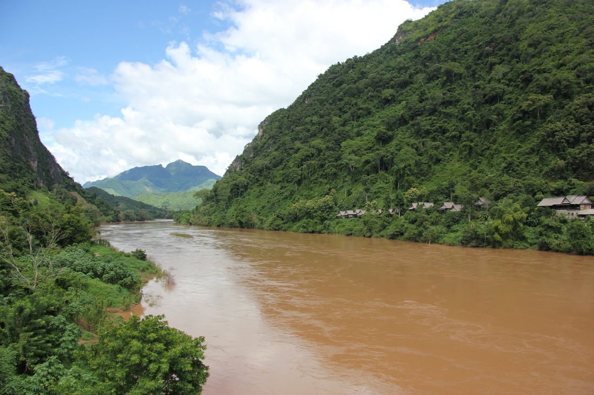

Laosz ország nevezetességei
Laung NamhtaEgy laoszi utazás nem lehet teljes az északi esőerdők megtekintése nélkül. A legkönnyebben elérhető, turisztikailag leginkább kiépített település az északi hegyvidéken Luang Namtha, ami a Nam Ha nemzeti védett területre vezető kirándulások bázisa |
Laung PrabangGyakorlatilag minden úti könyv a legjobb helyek listájának csúcsán szerepelteti, mint kötelező megállót egy laoszi úton – teljesen jogosan. Történelmi hangulatot idéző, gyarmati időkből fennmaradt épületek, forgalmas éjszakai piac (bár főleg szuvenírárusokkal), természeti és kulturális látnivalók, ráadásul mindez a Mekong folyó partján. |
|

Nong KhiawNong Khiaw, az álmos kis falu Luang Prabangtól északra található, a Nam Ou folyó partján, hegyekkel körbevéve – igazán gyönyörű. Egyrészt itt található az egész ország egyik legjobbjának tartott túrája (a „100 vízesés” – 100 waterfalls nevű helyhez), amely nem kifejezetten könnyű – többfelé vizes, csúszós terepen haladva, de a táj szépsége kárpótol a nehézségekért. |
Bokeo természetvédelmi területLuang Namthához viszonylag közel, attól dél-nyugati irányba, a thai és mianmari határon található Bokeo, amelyet a mára már híres Gibbon experience nevű tájvédelmi program rajzolt fel az országba látogató utazók térképére. |

Vang ViengVang Vieng a laoszi turizmus „szégyenfoltja”: egész Délkelet-Ázsia egyik legnépszerűbb partihelyének számított a korábbi években, hátizsákos fiatalok tízezreit vonzva e békés és csendes faluba. Vang Vieng az úgynevezett „tubing” miatt vált a fiatalok kedvenc partihelyévé, ami nem más, mint gumimatracon való csorgás a folyón, melyet egy sor folyóparti bár tett még élvezetesebbé az arra fogékony közönségnek. |
Kuang Si vízesésVang Vieng a laoszi turizmus „szégyenfoltja”: egész Délkelet-Ázsia egyik legnépszerűbb partihelyének számított a korábbi években, hátizsákos fiatalok tízezreit vonzva e békés és csendes faluba. Vang Vieng az úgynevezett „tubing” miatt vált a fiatalok kedvenc partihelyévé, ami nem más, mint gumimatracon való csorgás a folyón, melyet egy sor folyóparti bár tett még élvezetesebbé az arra fogékony közönségnek. |